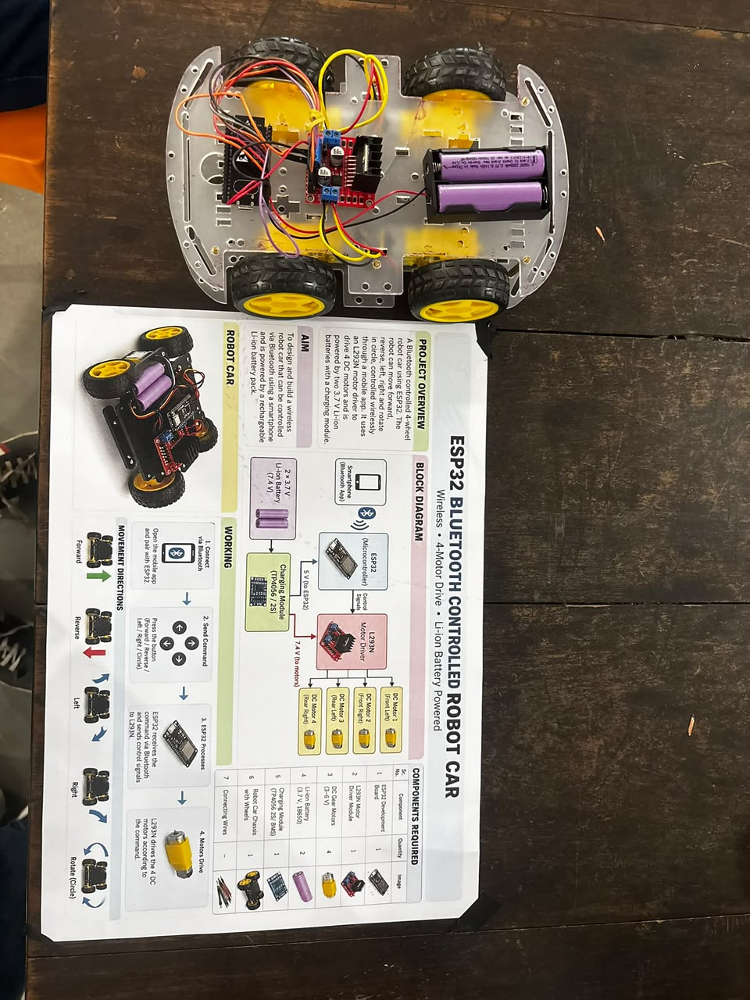
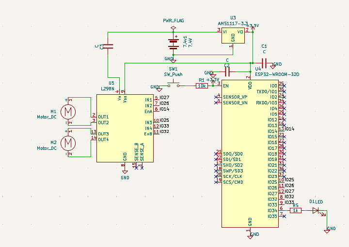
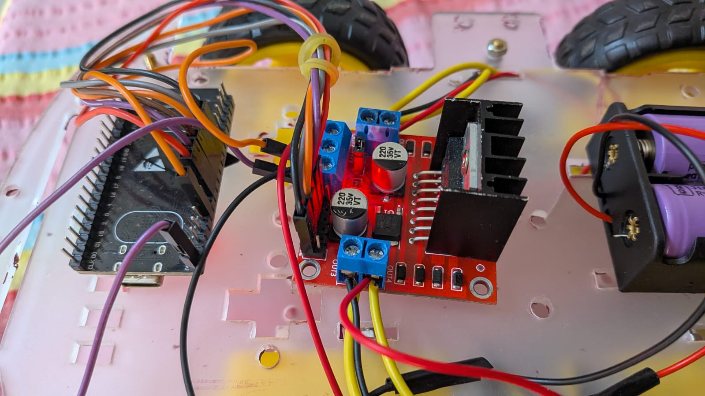
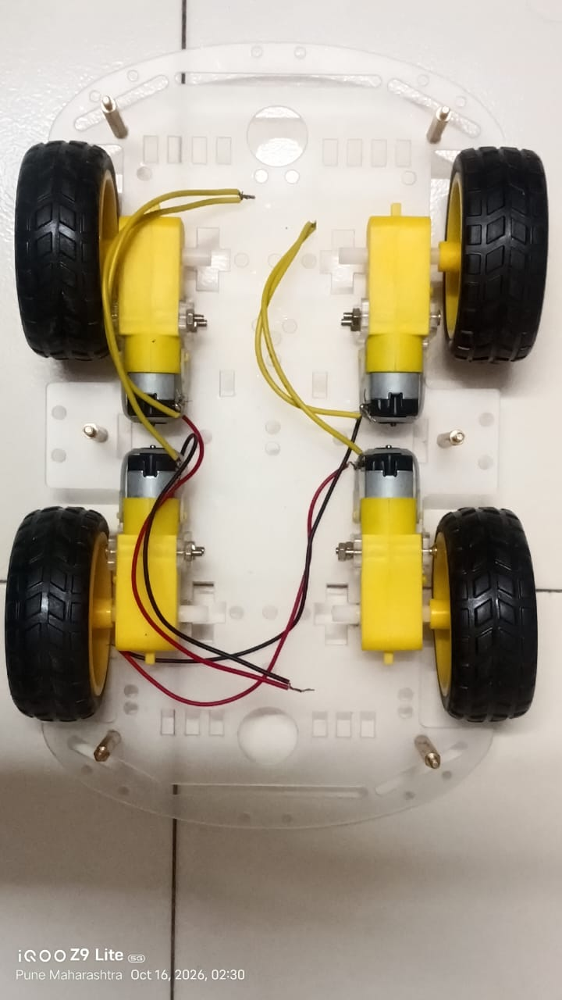

BLE-Controlled Four-Wheel Rover
An ESP32-S3-based rover with wireless movement commands and PWM motor-speed control.
Status: Working prototype — all four wheels operating
The idea
This project is a four-wheel rover controlled wirelessly from a phone over Bluetooth Low Energy (BLE). An ESP32-S3 receives movement commands and controls the motor-driver inputs and PWM speed signals. The goal was to build a working mobile platform and debug the practical issues that appear when firmware, motors and power electronics are integrated.
Architecture
- Controller: ESP32-S3 development board
- Wireless control: BLE serial communication from a mobile terminal app
- Motor driver: L298N dual H-bridge module
- Drive: Four DC motors; the two motors on each side are connected in parallel
- Power: 7.4 V (2S) Li-ion battery for the drive system, plus a 5 V regulator for control electronics and a shared ground reference
Swipe the diagram sideways to see all of it.
How it works
- A mobile phone sends a movement command through a BLE serial-terminal app.
- The ESP32-S3 interprets the command and sets GPIO outputs to select motor direction.
- PWM signals regulate the motor-driver enable inputs to control speed.
- The left and right motor pairs work together to move or turn the rover.
Hardware and wiring



Firmware and control
| Part | Implementation |
|---|---|
| Command link | BLE serial communication with a phone-based terminal app |
| Direction | GPIO outputs control the L298N direction inputs |
| Speed | PWM output controls the motor-driver enable inputs |
| Speed transitions | Firmware uses gradual speed changes rather than jumping directly to the target value |
| PWM configuration | 5 kHz frequency, 8-bit resolution |
Problems I debugged
1. Motor polarity and direction mismatch
Motor wiring and direction logic did not initially produce the expected movement. I corrected the polarity/command mapping so the rover responds consistently to direction commands.
2. Weak response at low PWM values
At low speed settings, the motors did not always start moving reliably. This exposed the difference between setting a PWM duty cycle and supplying enough effective torque to overcome motor friction and load.
3. Power distribution and motor-driver integration
I adjusted the power arrangement and checked the shared ground between the controller and motor-driver circuitry. This helped make the full system work reliably with all four wheels.
Live demonstration
Outcome
The result is a working four-wheel rover that accepts wireless movement commands over BLE and supports PWM-based speed control. The most valuable part was debugging motor polarity, low-speed behaviour and power distribution until the integrated system operated reliably.
What I learned
- Connecting BLE communication to real-time embedded motor control.
- Using GPIO direction signals and PWM with an H-bridge motor driver.
- Debugging motor start-up behaviour, wiring polarity and power distribution.
- Testing the full hardware–firmware system rather than treating each component separately.
What's next
- Document the final wiring and power connections clearly.
- Add wheel encoders if measured speed feedback is needed.
- Add a defined communication-loss response, such as stopping the motors if commands are no longer received.
- Evaluate a more efficient motor driver if voltage drop or thermal performance becomes a limitation.
Tools
ESP32-S3 development board, BLE serial terminal, C/C++ firmware, GPIO, PWM, L298N motor driver, DC motors, 2S Li-ion battery and 5 V regulator.
Contact: prasannakakade88@gmail.com